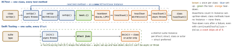

testing · folio
In one line: XCTest: subclass XCTestCase, name methods test…, assert with
XCTAssert*; a fresh instance per test method. Swift Testing (open source, in the
Swift toolchain, all Swift platforms): @Test functions, any type is a suite, two macros
#expect / #require, traits and arguments — run in parallel, in one process
by default. Both live in one target; UI automation, XCTMetric performance tests and
Objective-C stay in XCTest.
Download PDF Print view LaTeX source


XCTest — the rules
- Test method: instance method of an
XCTestCasesubclass, no parameters, no return value, name starts with lowercasetest; may bethrowsorasync. Synchronous tests run on the main actor;asyncset-up/tear-down and blocks run on an arbitrary actor unless marked@MainActor. - Set-up:
setUpWithError()when it can throw — a throw is recorded as a failure, notry!;setUp() async throwsfor async work.addTeardownBlock { }puts clean-up next to the code that needs it. continueAfterFailure(defaulttrue);falseends the method at the first failure — the other tests still run.try XCTUnwrap(x)fails and stops one test;x!onnilcrashes the process: no tear-down.- Skip:
throw XCTSkip("…")·try XCTSkipIf(c)/…Unless(c). Known failure:XCTExpectFailure("…")—isStrictdefaults totrue, so a failure that stops happening becomes an issue. Xcode 26: anXCTIssueof warning severity does not fail the test. executionTimeAllowance: default 600 s, rounded up to whole minutes, active only when timeouts are on (test plan or-test-timeouts-enabled YES).XCTAttachment+add(_:):lifetimedefaults to.deleteOnSuccess— kept only for failures unless.keepAlways.- Parallel: the simulator is cloned; each runner process takes whole classes, one test at a time — one giant class never parallelises.
Performance tests — XCTest only
measure { } times the block; measure(metrics:options:) records any of XCTClockMetric (time) · XCTCPUMetric · XCTMemoryMetric (physical) · XCTStorageMetric (logical writes) · XCTOSSignpostMetric (a signposted interval) · XCTApplicationLaunchMetric · XCTHitchMetric. The block runs iterationCount + 1 times; the first is ignored (warm caches). A baseline = average + allowed standard deviation, set from the report and stored per device
configuration.
The leak test — weak, scope, nil
func test_viewModel_isReleased() {
weak var weakSUT: FeedViewModel?
do {
let sut = FeedViewModel(api: StubAPI())
weakSUT = sut // observe, don't retain
sut.start() // may build a cycle
} // last strong ref gone
XCTAssertNil(weakSUT) // Swift Testing:
} // #expect(weakSUT == nil)
func trackForLeaks(_ o: AnyObject, line: UInt = #line) {
addTeardownBlock { [weak o] in XCTAssertNil(o, line: line) }
} // after the test bodyMixing the two (Swift 6.4, ST-0021)
SWIFT_TESTING_XCTEST_INTEROP_MODE: none · limited (an XCTAssert failing in a @Test = warning) · complete (= failure) · strict (fatalError). Toolchain < 6.4: none — the failure was silently lost; packages with tools-version ≥ 6.4 get complete, older ones limited; Xcode 27 sets it per test plan.
Traps
trackForLeakson a SUT kept in avar sutproperty always fails: teardown blocks run beforetearDown()nils it — build it in a localmakeSUT().- Shared statics, singletons,
UserDefaults.standardrace once tests run in parallel — inject them, or.serializedas the last resort. .timeLimit/executionTimeAllowancecatch hangs, not slowness — that ismeasure’s job.
XCTest → Swift Testing
| XCTest | Swift Testing |
|---|---|
XCTAssertTrue(x) | #expect(x) |
XCTAssertEqual(a, b), …Nil, …Identical, …GreaterThan | #expect(a == b), x == nil, ===, > — one macro; a failure shows every operand’s value |
XCTAssertThrowsError | let e = #expect(throws: E.self) { try f() } — e: E? (6.1); (any Error).self for any |
XCTAssertNoThrow | #expect(throws: Never.self) { try f() } |
try XCTUnwrap(x) | try #require(x) — throws ExpectationFailedError, ends this test |
XCTFail("…") | Issue.record("…"); severity: .warning (6.3) |
XCTSkipIf | .enabled(if:) · .disabled("why"); mid-test try Test.cancel() (6.3) |
XCTExpectFailure | withKnownIssue { } — no issue ⇒ records one, unless isIntermittent: true |
XCTestExpectation | await confirmation(expectedCount: 1...) { c in } — counted when the closure returns; it never waits |
setUp / tearDown | init() / deinit; shared async → TestScoping trait |
executionTimeAllowance | .timeLimit(.minutes(n)) — minutes only, shortest wins |
XCTAttachment | Attachment.record(value, named:) (6.2) |
measure, XCUIApplication, Objective-C | — stay in XCTest |
Swift Testing — the rules
@Teston a function at file scope or in a type;async,throws,@MainActorallowed. Name:@Test("…")or a raw identifierfunc `adds two numbers`()(6.2).- A type holding tests is a suite;
@Suiteonly adds a name or traits. Zero-argumentinitrequired; never@availableon a suite. Suite traits (tags,.disabled) are inherited. #expectexpands to code capturing the source text and each subexpression’s value;#requirealso throws. Mid-test failure →Issue.record.- Parallel, randomised, in-process (tasks), on devices too. Tests no longer default to the main actor.
.serialized— inherited by nested suites; on a parameterized test its cases run one by one. - Run:
swift testruns both frameworks;--filter/--skiptake a regex;--no-parallel. 6.4:--maximum-repetitions n --repeat-until pass|failrepeats only the matching cases — as Xcode 27’s repetition mode now does. - Traits:
.enabled(if:)·.disabled·.bug("url")·.tags(.slow)withextension Tag { @Tag static var slow: Self }(test plans include/exclude by tag) ·.timeLimit·.serialized·.compactMapIssues/.filterIssues(6.2) · a customTestScoping(6.1). - Exit tests (6.2):
await #expect(processExitsWith: .failure) { … }— the closure ismain()of a child process of the same test binary;.success·.failure·.exitCode(n)·.signal(n); may observe stdout/stderr. Captures (6.3): listed,Sendable+Codable. macOS, Linux, FreeBSD, OpenBSD, Windows — not iOS. - Attachments:
String, bytes,Data,Encodable(6.2);CGImage,UIImage,NSImage,CIImageas.png/.jpeg(6.3);Transferable(6.4). Xcode: test report +.xcresult;swift test --attachments-path.
Arguments — one test case each
Each element is its own case, run in parallel, shown and re-runnable alone (if the argument is CustomTestArgumentEncodable, RawRepresentable, Encodable or Identifiable). At most two collections — every combination; zip pairs them.